Успешные кейсы
Полиграфия ООО “Арт-Принт”
Производство этикеток и пленок
Более 40 сотрудников
20 лет НА РЫНКЕ
25 единиц
производственного
оборудования
Нам доверяют
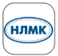
НЛМК
Haier
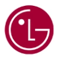
LG Electronics Rus
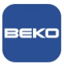
BEKO
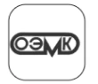
ОЭМК
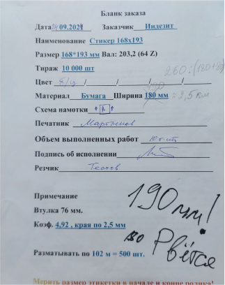
До
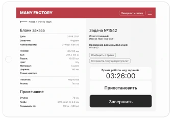
После
Итоги внедрения ManyFactory
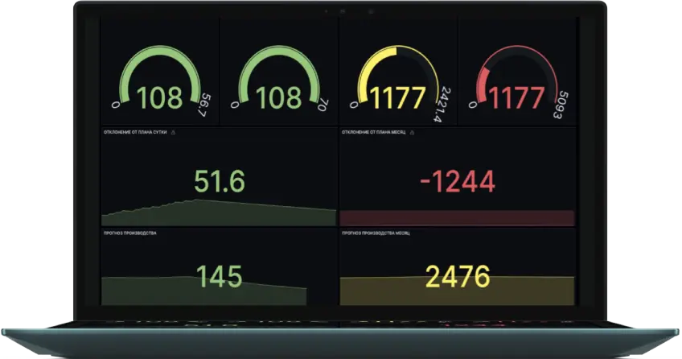
1. Снижение простоя оборудования на 17%
2. Сокращение ненужного запаса на складах на 21%
3. Изменение внутренних процессов за счет сбора обратной связи от сотрудников
4. Интеграция за 3 месяца
5. Экономический эффект — 4.300.000 рублей
Компания “Arte-Bottega”
Производство премиальной мебели и элементов интерьера
Более 80 сотрудников
17 лет НА РЫНКЕ
40 единиц
производственного
оборудования
НАШ ГЛАВНЫЙ АКТИВ - ВЫСОКОКВАЛИФИЦИРОВАННЫЕ СОТРУДНИКИ
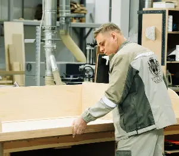
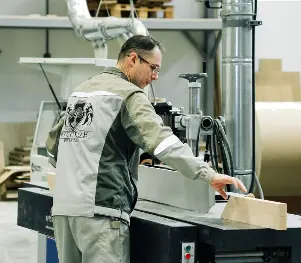
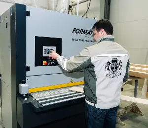
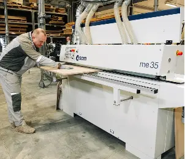
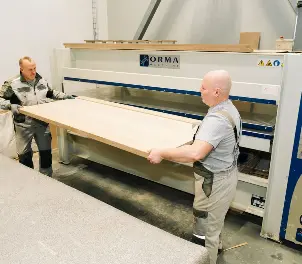
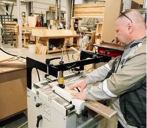
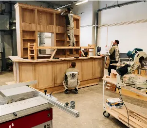
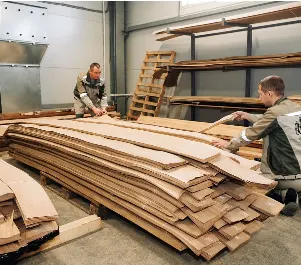
2 месяца работы платформы
Интеграция системы сбора предложений от сотрудников
Предложено 30 идей от сотрудников, 60% были внедрены
Экономический эффект за время использования: 400.000 ₽
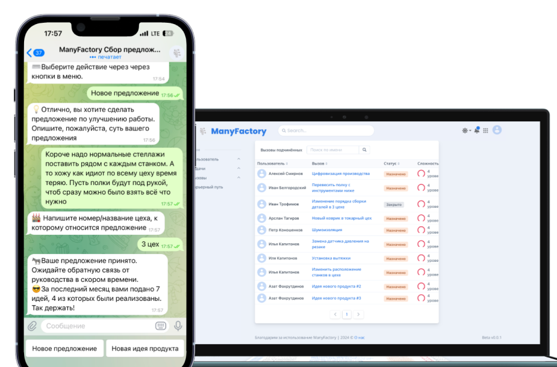
 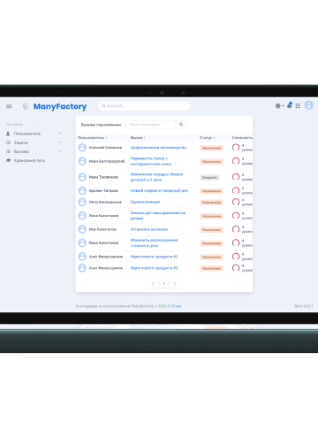
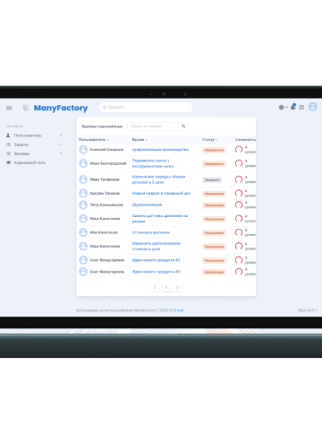
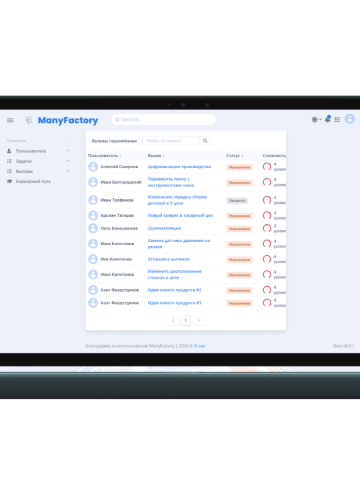